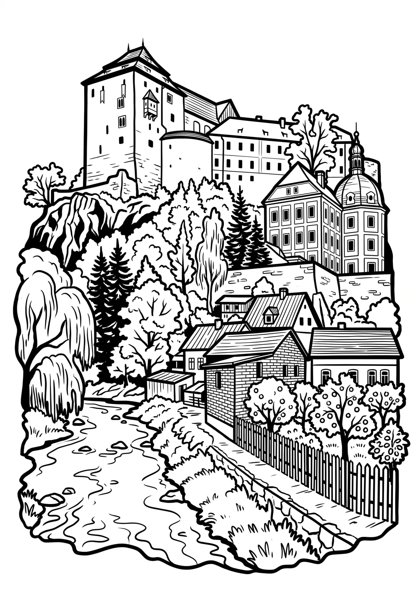

Hrad Bečov nad Teplou
Bečov nad Teplou (německy Petschau) je hrad a zámek ve stejnojmenném městě jižně od Karlových Varů. Hrad stojí nad hlubokým údolím obklopený vysokými lesnatými kopci, které patří k Slavkovskému lesu a Tepelské vrchovině. Hrad obtéká ze dvou stran řeka Teplá a z třetí strany je oddělen Dolským, dříve Hlubokým potokem. V údolí se nachází město Bečov nad Teplou.
Více na Wikipedii